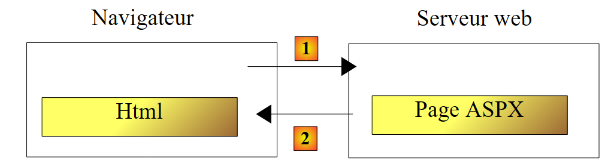
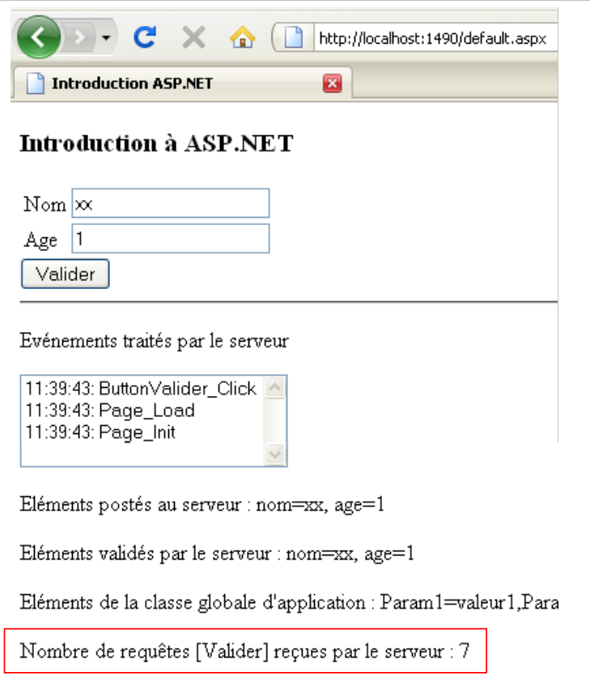

2. مقدمة سريعة إلى ASP.NET
نهدف هنا إلى تقديم مفاهيم ASP.NET التي ستكون مفيدة لاحقًا في هذا المستند، باستخدام بعض الأمثلة. لا تغطي هذه المقدمة تعقيدات الاتصال بين العميل والخادم في تطبيق الويب. لذلك، يمكنك قراءة:
- برمجة ASP.NET [تطوير الويب باستخدام ASP.NET 1.1]
هذه المقدمة مخصصة لأولئك الذين يرغبون في البدء بسرعة، مع قبول — على الأقل في البداية — أن بعض النقاط المهمة قد تُترك دون شرح. سيتناول باقي هذا المستند هذه النقاط بمزيد من التعمق. يمكن للمطلعين على ASP.NET الانتقال مباشرة إلى القسم 3.
2.1. مشروع نموذجي
2.1.1. إنشاء المشروع
 |
- في [1]، قم بإنشاء مشروع جديد باستخدام Visual Web Developer
- في [2]، حدد مشروع ويب Visual C#
- في [3]، حدد أنك تريد إنشاء تطبيق ويب ASP.NET
- في [4]، قم بتسمية التطبيق. سيتم إنشاء مجلد للمشروع بهذا الاسم.
- في [5]، حدد المجلد الأصلي لمجلد المشروع [4]
 |
- في [6]، المشروع الذي تم إنشاؤه
- [Default.aspx] هو صفحة ويب تم إنشاؤها افتراضيًا. وهي تحتوي على علامات HTML وعلامات ASP.NET
- يحتوي [Default.aspx.cs] على الكود الخاص بمعالجة الأحداث التي يطلقها المستخدم على صفحة [Default.aspx] المعروضة في المتصفح
- يحتوي [Default.aspx.designer.cs] على قائمة مكونات ASP.NET لصفحة [Default.aspx]. كل مكون ASP.NET موجود في صفحة [Default.aspx] يولد إعلانًا لهذا المكون في [Default.aspx.designer.cs].
- [Web.config] هو ملف التكوين لمشروع ASP.NET.
- [References] هي قائمة ملفات DLL المستخدمة في مشروع الويب. ملفات DLL هذه هي مكتبات فئات يحتاج المشروع إلى استخدامها. في [7] توجد قائمة ملفات DLL المضمنة افتراضيًا في مراجع المشروع. معظمها غير ضروري. إذا احتاج المشروع إلى استخدام ملف DLL غير مدرج في [7]، فيمكن إضافته عبر [8].
2.1.2. صفحة [Default.aspx]
إذا قمت بتشغيل المشروع باستخدام [Ctrl-F5]، فسيتم عرض صفحة [Default.aspx] في المتصفح:
 |
- في [1]، عنوان URL لمشروع الويب. يحتوي Visual Web Developer على خادم ويب مدمج يتم تشغيله عند تشغيل مشروع. يستمع الخادم على منفذ عشوائي، وهو في هذه الحالة 1490. عادةً ما يكون منفذ الاستماع هو المنفذ 80. في [1]، لم يتم طلب أي صفحة. في هذه الحالة، يتم عرض صفحة [Default.aspx]، ومن هنا جاءت تسميتها بالصفحة الافتراضية.
- في [2]، تكون صفحة [Default.aspx] فارغة.
- في Visual Web Developer، يمكن إنشاء صفحة [Default.aspx] [3] بصريًا (علامة التبويب [Design]) أو باستخدام العلامات (علامة التبويب [Source])
- في [4]، تظهر صفحة [Default.aspx] في وضع [Design]. يتم إنشاؤها عن طريق سحب وإسقاط المكونات الموجودة في صندوق الأدوات [5].
 |
يتيح وضع [Source] [6] الوصول إلى كود مصدر الصفحة:
<%@ Page Language="C#" AutoEventWireup="true" CodeBehind="Default.aspx.cs" Inherits="Intro._Default" %>
<!DOCTYPE html PUBLIC "-//W3C//DTD XHTML 1.0 Transitional//EN" "http://www.w3.org/TR/xhtml1/DTD/xhtml1-transitional.dtd">
<html xmlns="http://www.w3.org/1999/xhtml">
<head runat="server">
<title></title>
</head>
<body>
<form id="form1" runat="server">
<div>
</div>
</form>
</body>
</html>
- السطر 1 هو توجيه ASP.NET يسرد خصائص معينة للصفحة
- تنطبق توجيهات Page على صفحة الويب. وهناك توجيهات أخرى مثل Application و WebService وغيرها، والتي تنطبق على كائنات ASP.NET الأخرى
- تحدد السمة CodeBehind الملف الذي يتعامل مع أحداث الصفحة
- تحدد السمة Language لغة .NET المستخدمة في ملف CodeBehind
- تحدد السمة Inherits اسم الفئة المحددة داخل ملف CodeBehind
- تشير السمة AutoEventWireUp="true" إلى أن الربط بين حدث في [Default.aspx] ومعالجته في [Default.aspx.cs] يتم حسب اسم الحدث. وبالتالي، سيتم معالجة حدث Load في صفحة [Default.aspx] بواسطة الأسلوب Page_Load للفئة Intro._Default المحددة بواسطة السمة Inherits.
- تصف الأسطر 4-14 الصفحة [Default.aspx] باستخدام العلامات:
- علامات HTML الكلاسيكية مثل علامات <body> أو <div>
- علامات ASP.NET. وهي العلامات التي تحتوي على السمة runat="server". تتم معالجة علامات ASP.NET بواسطة خادم الويب قبل إرسال الصفحة إلى العميل. ويتم تحويلها إلى علامات HTML. وبالتالي، يتلقى متصفح العميل صفحة HTML قياسية لم تعد تحتوي على أي علامات ASP.NET.
يمكن تعديل صفحة [Default.aspx] مباشرةً من شفرة المصدر الخاصة بها. ويكون هذا أحيانًا أسهل من استخدام وضع [Design]. نقوم بتعديل شفرة المصدر على النحو التالي:
<%@ Page Language="C#" AutoEventWireup="true" CodeBehind="Default.aspx.cs" Inherits="Intro._Default" %>
<!DOCTYPE html PUBLIC "-//W3C//DTD XHTML 1.0 Transitional//EN" "http://www.w3.org/TR/xhtml1/DTD/xhtml1-transitional.dtd">
<html xmlns="http://www.w3.org/1999/xhtml">
<head runat="server">
<title>Introduction ASP.NET</title>
</head>
<body>
<h3>Introduction à ASP.NET</h3>
<form id="form1" runat="server">
<div>
</div>
</form>
</body>
</html>
في السطر 6، نضع عنوانًا للصفحة باستخدام علامة HTML <title>. في السطر 9، ندرج نصًا في نص الصفحة (<body>). إذا قمنا بتشغيل المشروع (Ctrl-F5)، فسنحصل على النتيجة التالية في المتصفح:
 |
2.1.3. ملفان [Default.aspx.designer.cs] و [Default.aspx.cs]
يعلن ملف [Default.aspx.designer.cs] عن مكونات صفحة [Default.aspx]:
//------------------------------------------------------------------------------
// <auto-generated>
// This code was generated by a tool.
// Runtime version :2.0.50727.3603
//
// Changes made to this file may cause incorrect behavior and will be lost if
// the code is regenerated.
// </auto-generated>
//------------------------------------------------------------------------------
namespace Intro {
public partial class _Default {
/// <summary>
/// Control form1.
/// </summary>
/// <remarks>
/// Automatically generated field.
/// To modify, move the field declaration from the designer file to the code-behind file.
/// </remarks>
protected global::System.Web.UI.HtmlControls.HtmlForm form1;
}
}
يحتوي هذا الملف على قائمة مكونات ASP.NET الموجودة في الصفحة [Default.aspx] والتي لها معرف. وهي تتوافق مع العلامات الموجودة في [Default.aspx] التي تحتوي على السمة runat="server" والسمة id. وبالتالي، فإن المكون الموجود في السطر 23 أعلاه يتوافق مع العلامة
<form id="form1" runat="server">
من [Default.aspx].
نادرًا ما يتعامل المطور مع ملف [Default.aspx.designer.cs]. ومع ذلك، فإن هذا الملف مفيد في تحديد فئة مكون معين. كما هو موضح أدناه، فإن مكون form1 هو من النوع HtmlForm. يمكن للمطور بعد ذلك استكشاف هذه الفئة للتعرف على خصائصها وأساليبها. يتم استخدام المكونات الموجودة في صفحة [Default.aspx] بواسطة الفئة الموجودة في ملف [Default.aspx.cs]:
using System;
using System.Collections.Generic;
using System.Linq;
using System.Web;
using System.Web.UI;
using System.Web.UI.WebControls;
namespace Intro
{
public partial class _Default : System.Web.UI.Page
{
protected void Page_Load(object sender, EventArgs e)
{
}
}
}
لاحظ أن الفئة المُعرَّفة في ملفَي [Default.aspx.cs] و [Default.aspx.designer.cs] هي نفسها (السطر 10): Intro._Default. إن الكلمة الرئيسية partial هي التي تتيح توسيع نطاق تعريف الفئة عبر ملفات متعددة، وفي هذه الحالة ملفين.
في السطر 10 أعلاه، نرى أن الفئة [_Default] تمتد إلى الفئة [Page] وترث أحداثها. أحد هذه الأحداث هو حدث Load، الذي يحدث عند تحميل الصفحة بواسطة خادم الويب. في السطر 12، تتعامل طريقة Page_Load مع حدث Load للصفحة. هذا هو المكان الذي يتم فيه عادةً تهيئة الصفحة قبل عرضها في متصفح العميل. هنا، لا تقوم طريقة Page_Load بأي شيء.
يتم إنشاء الفئة المرتبطة بصفحة الويب — وهي في هذه الحالة فئة Intro._Default — عند بدء طلب العميل، ويتم إغلاقها بمجرد إرسال الاستجابة إلى العميل. ولذلك، لا يمكن استخدامها لتخزين المعلومات بين الطلبات. وللقيام بذلك، يجب عليك استخدام مفهوم جلسة عمل المستخدم.
2.2. أحداث صفحة ويب ASP.NET
نقوم بإنشاء الصفحة [Default.aspx] التالية:
<%@ Page Language="C#" AutoEventWireup="true" CodeBehind="Default.aspx.cs" Inherits="Intro._Default" %>
<!DOCTYPE html PUBLIC "-//W3C//DTD XHTML 1.0 Transitional//EN" "http://www.w3.org/TR/xhtml1/DTD/xhtml1-transitional.dtd">
<html xmlns="http://www.w3.org/1999/xhtml">
<head runat="server">
<title>Introduction ASP.NET</title>
</head>
<body>
<h3>Introduction à ASP.NET</h3>
<form id="form1" runat="server">
<div>
<table>
<tr>
<td>
Nom</td>
<td>
<asp:TextBox ID="TextBoxNom" runat="server"></asp:TextBox>
</td>
<td>
</td>
</tr>
<tr>
<td>
Age</td>
<td>
<asp:TextBox ID="TextBoxAge" runat="server"></asp:TextBox>
</td>
<td>
</td>
</tr>
</table>
</div>
<asp:Button ID="ButtonValider" runat="server" Text="Valider" />
<hr />
<p>
Evénements traités par le serveur</p>
<p>
<asp:ListBox ID="ListBoxEvts" runat="server"></asp:ListBox>
</p>
</form>
</body>
</html>
تبدو طريقة عرض [التصميم] للصفحة كما يلي:
 |
ملف [Default.aspx.designer.cs] كما يلي:
namespace Intro {
public partial class _Default {
protected global::System.Web.UI.HtmlControls.HtmlForm form1;
protected global::System.Web.UI.WebControls.TextBox TextBoxNom;
protected global::System.Web.UI.WebControls.TextBox TextBoxAge;
protected global::System.Web.UI.WebControls.Button ButtonValider;
protected global::System.Web.UI.WebControls.ListBox ListBoxEvts;
}
}
يحتوي هذا على جميع مكونات ASP.NET من الصفحة [Default.aspx] التي لها معرف.
نقوم بتعديل ملف [Default.aspx.cs] على النحو التالي:
using System;
namespace Intro
{
public partial class _Default : System.Web.UI.Page
{
protected void Page_Init(object sender, EventArgs e)
{
// the event
ListBoxEvts.Items.Insert(0, string.Format("{0}: Page_Init", DateTime.Now.ToString("hh:mm:ss")));
}
protected void Page_Load(object sender, EventArgs e)
{
// the event
ListBoxEvts.Items.Insert(0, string.Format("{0}: Page_Load", DateTime.Now.ToString("hh:mm:ss")));
}
protected void ButtonValider_Click(object sender, EventArgs e)
{
// the event
ListBoxEvts.Items.Insert(0, string.Format("{0}: ButtonValider_Click", DateTime.Now.ToString("hh:mm:ss")));
}
}
}
تتعامل فئة [_Default] (السطر 5) مع ثلاثة أحداث:
- حدث Init (السطر 7)، الذي يحدث عند تهيئة الصفحة
- حدث Load (السطر 13)، الذي يحدث عند تحميل الصفحة بواسطة خادم الويب. يحدث حدث Init قبل حدث Load.
- حدث Click على زر ButtonValider (السطر 19)، والذي يحدث عندما ينقر المستخدم على زر [Validate]
يتضمن التعامل مع كل من هذه الأحداث الثلاثة إضافة رسالة إلى مكون Listbox المسمى ListBoxEvts. تعرض هذه الرسالة وقت الحدث واسمه. يتم وضع كل رسالة في أعلى القائمة. لذلك، فإن الرسائل الموجودة في أعلى القائمة هي الأحدث.
عند تشغيل المشروع، يتم عرض الصفحة التالية:
 |
يمكننا أن نرى في [1] أن أحداث Page_Init و Page_Load قد حدثت بهذا الترتيب. تذكر أن الحدث الأحدث يظهر في أعلى القائمة. عندما يطلب المتصفح الصفحة [Default.aspx] مباشرةً عبر عنوان URL الخاص بها [2]، فإنه يفعل ذلك باستخدام أمر HTTP (بروتوكول نقل النص التشعبي) يُسمى GET. بمجرد تحميل الصفحة في المتصفح، سيقوم المستخدم بتشغيل الأحداث على الصفحة. على سبيل المثال، سينقر على الزر [Submit] [3]. تؤدي الأحداث التي يطلقها المستخدم بمجرد تحميل الصفحة في المتصفح إلى بدء طلب إلى الصفحة [Default.aspx]، ولكن هذه المرة باستخدام أمر HTTP يسمى POST. باختصار:
- يتم التحميل الأولي لصفحة P في المتصفح عبر عملية HTTP GET
- تولد الأحداث التي تحدث لاحقًا على الصفحة طلبًا جديدًا إلى نفس الصفحة P في كل مرة، ولكن هذه المرة باستخدام أمر HTTP POST. يمكن للصفحة P تحديد ما إذا كان الطلب قد تم باستخدام أمر GET أو POST، مما يسمح لها بالتصرف بشكل مختلف إذا لزم الأمر — وهو ما يحدث عادةً.
الطلب الأولي لصفحة ASPX: GET
 |
- في [1]، يطلب المتصفح صفحة ASPX عبر طلب HTTP GET بدون معلمات.
- في [2]، يرسل خادم الويب إخراج HTML لصفحة ASPX المطلوبة.
معالجة حدث تم تشغيله على الصفحة المعروضة بواسطة المتصفح: POST
 |
- في [1]، عندما يحدث حدث على صفحة HTML، يطلب المتصفح صفحة ASPX التي تم استردادها مسبقًا عبر عملية GET، ولكن هذه المرة باستخدام طلب HTTP POST مصحوبًا بمعلمات. هذه المعلمات هي قيم المكونات الموجودة داخل علامة <form> في صفحة HTML التي يعرضها المتصفح. تسمى هذه القيم القيم المرسلة من العميل. ستستخدمها صفحة ASPX لمعالجة طلب العميل.
- في [2]، يرسل خادم الويب إخراج HTML لصفحة ASPX التي تم طلبها مبدئيًا عبر POST، أو لصفحة أخرى في حالة حدوث نقل أو إعادة توجيه للصفحة.
لنعد إلى صفحتنا النموذجية:
 |
- في [2]، تم استرداد الصفحة عبر طلب GET.
- في [1]، نرى الحدثين اللذين وقعا أثناء طلب GET هذا
إذا نقر المستخدم أعلاه على زر [التحقق من الصحة] [3]، فسيتم طلب صفحة [Default.aspx] عبر طلب POST. سيصاحب طلب POST هذا معلمات تمثل قيم جميع المكونات المضمنة في علامة <form> في صفحة [Default.aspx]: مربعا النص [TextBoxName، TextBoxAge]، وزر [SubmitButton]، والقائمة [EventListBox]. القيم المرسلة للمكونات هي كما يلي:
- TextBox: القيمة التي تم إدخالها
- Button: نص الزر، في هذه الحالة "Validate"
- ListBox: نص الرسالة المحددة في ListBox
استجابةً لطلب POST، نحصل على الصفحة [4]. هذه هي مرة أخرى الصفحة [Default.aspx]. هذا سلوك طبيعي، ما لم يكن هناك نقل للصفحة أو إعادة توجيه بواسطة معالجات أحداث الصفحة. يمكننا أن نرى أن حدثين جديدين قد وقعا:
- حدث Page_Load، الذي وقع عند تحميل الصفحة
- حدث ButtonValider_Click، الذي حدث عند النقر على الزر [Validate]
لاحظ أن:
- لم يحدث حدث Page_Init أثناء عملية HTTP POST، في حين أنه حدث أثناء عملية HTTP GET
- يحدث حدث Page_Load في كل مرة، سواء كان GET أو POST. وفي هذه الطريقة نحتاج عمومًا إلى معرفة ما إذا كنا نتعامل مع GET أو POST.
- بعد POST، تم إرسال صفحة [Default.aspx] مرة أخرى إلى العميل مع التغييرات التي أجراها معالجات الأحداث. هذا هو الحال دائمًا. بمجرد معالجة أحداث الصفحة P، يتم إرسال تلك الصفحة P نفسها مرة أخرى إلى العميل. هناك طريقتان لخرق هذه القاعدة. يمكن لمعالج الأحداث الأخير الذي تم تنفيذه
- نقل تدفق التنفيذ إلى صفحة أخرى P2.
- إعادة توجيه متصفح العميل إلى صفحة أخرى P2.
في كلتا الحالتين، يتم إرسال الصفحة P2 إلى المتصفح. هناك اختلافات بين الطريقتين سنناقشها لاحقًا.
- حدث الحدث ButtonValider_Click بعد الحدث Page_Load. لذلك، فإن معالج الأحداث هذا هو الذي يمكنه تحديد ما إذا كان سيتم النقل أو إعادة التوجيه إلى صفحة P2.
- احتفظت قائمة الأحداث [4] بالحدثين المعروضين أثناء التحميل الأولي لصفحة [Default.aspx] باستخدام GET. وهذا أمر مثير للدهشة بالنظر إلى أن صفحة [Default.aspx] أعيد إنشاؤها أثناء عملية POST. ينبغي أن نرى صفحة [Default.aspx] بقيم تصميمها، وبالتالي مربع قائمة فارغ. ومن المفترض أن يؤدي تنفيذ معالجي Page_Load و ButtonValider_Click إلى ملئه برسالتين. ومع ذلك، هناك أربع رسائل. ويفسر ذلك آلية VIEWSTATE. أثناء طلب GET الأولي، يرسل خادم الويب صفحة [Default.aspx] مع علامة HTML <input type="hidden" ...> تسمى حقلًا مخفيًا (السطر 10 أدناه).
في حقل معرف "__VIEWSTATE"، يقوم خادم الويب بترميز قيم جميع مكونات الصفحة. ويقوم بذلك لكل من طلب GET الأولي وطلبات POST اللاحقة. عند إرسال طلب POST إلى الصفحة P:
- يطلب المتصفح الصفحة P عن طريق إرسال قيم جميع المكونات الموجودة داخل علامة <form> في طلبه. في الأعلى، يمكننا أن نرى أن مكون "__VIEWSTATE" موجود داخل علامة <form>. وبالتالي، يتم إرسال قيمته إلى الخادم أثناء طلب POST.
- يتم إنشاء مثيل للصفحة P وتهيئتها بقيم منشئها
- يُستخدم مكون "__VIEWSTATE" لاستعادة القيم التي كانت للمكونات عند إرسال الصفحة P سابقًا. هكذا، على سبيل المثال، تسترد قائمة الأحداث [4] أول رسالتين كانتا موجودتين عند إرسالها استجابة لطلب GET الأولي للمتصفح.
- ثم تأخذ مكونات الصفحة P القيم التي أرسلها المتصفح. في هذه المرحلة، يكون النموذج الموجود في الصفحة P في الحالة التي أرسله فيها المستخدم.
- تتم معالجة حدث Page_Load. هنا، يضيف رسالة إلى قائمة الأحداث [4].
- يتم التعامل مع الحدث الذي أدى إلى تشغيل طلب POST. هنا، يضيف ButtonValider_Click رسالة إلى قائمة الأحداث [4].
- يتم إرجاع الصفحة P. تحتوي المكونات على القيم التالية:
- إما القيمة المرسلة، أي القيمة التي كان المكون يحتوي عليها في النموذج عند إرساله إلى الخادم
- أو قيمة مقدمة من أحد معالجات الأحداث.
في مثالنا،
- سيحتفظ مكونا TextBox بقيمهما المرسلة لأن معالجات الأحداث لا تقوم بتعديلهما
- تستعيد قائمة الأحداث [4] قيمتها المنشورة، أي جميع الأحداث المدرجة بالفعل، بالإضافة إلى حدثين جديدين تم إنشاؤهما بواسطة طريقتي Page_Load و ButtonValider_Click.
يمكن تمكين آلية VIEWSTATE أو تعطيلها على مستوى المكون. دعونا نعطلها لمكون [ListBoxEvts]:
 |
- في [1]، تم تعطيل VIEWSTATE لمكون [ListBoxEvts]. أما مكون TextBox [2] فهو ممكّن بشكل افتراضي.
- في [3]، تم إرجاع الحدثين بعد GET الأولي
 |
- في [4]، قمنا بملء النموذج والنقر على زر [التحقق من الصحة]. سيتم إرسال طلب POST إلى صفحة [Default.aspx].
- في [6]، النتيجة التي تم إرجاعها بعد النقر على زر [التحقق]
- تفسر آلية VIEWSTATE الممكّنة سبب احتفاظ مربعات النص [7] بقيمها التي تم إرسالها في [4]
- تفسر آلية VIEWSTATE المعطلة سبب عدم احتفاظ مكون [ListBoxEvts] [8] بمحتواه [5].
2.3. معالجة القيم المنشورة
هنا، سنركز على القيم التي تم نشرها بواسطة مربعي النص عندما ينقر المستخدم على زر [التحقق من الصحة]. تتغير صفحة [Default.aspx] في وضع [التصميم] على النحو التالي:
 |
فيما يلي شفرة المصدر للعنصر المضاف في [1]:
<p>
Eléments postés au serveur :
<asp:Label ID="LabelPost" runat="server"></asp:Label>
</p>
سنستخدم مكون [LabelPost] لعرض القيم التي تم إدخالها في مربعي النص [2]. يتغير كود معالج الأحداث [Default.aspx.cs] على النحو التالي:
using System;
namespace Intro
{
public partial class _Default : System.Web.UI.Page
{
protected void Page_Init(object sender, EventArgs e)
{
// the event
ListBoxEvts.Items.Insert(0, string.Format("{0}: Page_Init", DateTime.Now.ToString("hh:mm:ss")));
}
protected void Page_Load(object sender, EventArgs e)
{
// the event
ListBoxEvts.Items.Insert(0, string.Format("{0}: Page_Load", DateTime.Now.ToString("hh:mm:ss")));
}
protected void ButtonValider_Click(object sender, EventArgs e)
{
// the event
ListBoxEvts.Items.Insert(0, string.Format("{0}: ButtonValider_Click", DateTime.Now.ToString("hh:mm:ss")));
// display name and age
LabelPost.Text = string.Format("nom={0}, age={1}", TextBoxNom.Text.Trim(), TextBoxAge.Text.Trim());
}
}
}
في السطر 24، نقوم بتحديث مكون LabelPost:
- LabelPost من النوع [System.Web.UI.WebControls.Label] (انظر Default.aspx.designer.cs). تمثل خاصية Text الخاصة به النص الذي يعرضه المكون.
- TextBoxName و TextBoxAge من النوع [System.Web.UI.WebControls.TextBox]. خاصية Text لمكون TextBox هي النص المعروض في حقل الإدخال.
- تقوم الطريقة Trim() بإزالة أي مسافات قد تسبق أو تتبع سلسلة
كما تم شرحه سابقًا، عند تنفيذ الأسلوب ButtonValider_Click، تكون مكونات الصفحة تحتوي على القيم التي كانت عليها عند إرسال الصفحة من قبل المستخدم. وبالتالي، تحتوي خصائص Text لمركبي TextBox على النص الذي أدخله المستخدم في المتصفح.
فيما يلي مثال:
 |
- في [1]، القيم المنشورة
- في [2]، استجابة الخادم.
- في [3]، استعادت مربعات النص قيمها المنشورة عبر آلية VIEWSTATE التي تم تنشيطها
- في [4]، تأتي الرسائل من مكون ListBoxEvts من طرق Page_Init و Page_Load و ButtonValider_Click ومن VIEWSTATE معطل
- في [5]، حصل مكون LabelPost على قيمته عبر طريقة ButtonValider_Click. لقد نجحنا في استرداد القيمتين اللتين أدخلهما المستخدم في مربعي النص [1].
كما هو موضح أعلاه، فإن القيمة المرسلة للعمر هي السلسلة "yy"، وهي قيمة غير صالحة. سنضيف مكونات تسمى أدوات التحقق من الصحة إلى الصفحة. تُستخدم هذه المكونات للتحقق من صحة البيانات المرسلة. يمكن التحقق من هذه الصحة في مكانين:
- على جانب العميل. يتيح لك خيار تكوين أداة التحقق اختيار إجراء الفحوصات في المتصفح أم لا. ثم يتم إجراؤها بواسطة كود JavaScript مضمن في صفحة HTML. عندما يرسل المستخدم القيم التي أدخلها في النموذج، يتم فحصها أولاً بواسطة كود JavaScript. إذا فشل أي من الفحوصات، لا يتم إرسال النموذج. وهذا يتجنب رحلة ذهاب وإياب إلى الخادم، مما يجعل الصفحة أكثر استجابة.
- على الخادم. في حين أن التحقق من الصحة من جانب العميل قد يكون اختياريًا، فإن التحقق من الصحة من جانب الخادم إلزامي بغض النظر عما إذا تم إجراء التحقق من الصحة من جانب العميل أم لا. وذلك لأنه عندما تتلقى الصفحة القيم المرسلة، لا توجد لديها طريقة لمعرفة ما إذا تم التحقق من صحتها من قبل العميل قبل إرسالها. لذلك، يجب على المطور دائمًا التحقق من صحة البيانات المرسلة من جانب الخادم.
تتطور صفحة [Default.aspx] على النحو التالي:
<%@ Page Language="C#" AutoEventWireup="true" CodeBehind="Default.aspx.cs" Inherits="Intro._Default" %>
<!DOCTYPE html PUBLIC "-//W3C//DTD XHTML 1.0 Transitional//EN" "http://www.w3.org/TR/xhtml1/DTD/xhtml1-transitional.dtd">
<html xmlns="http://www.w3.org/1999/xhtml">
<head runat="server">
<title>Introduction ASP.NET</title>
</head>
<body>
<h3>Introduction à ASP.NET</h3>
<form id="form1" runat="server">
<div>
<table>
<tr>
<td>
Nom</td>
<td>
<asp:TextBox ID="TextBoxNom" runat="server"></asp:TextBox>
</td>
<td>
<asp:RequiredFieldValidator ID="RequiredFieldValidatorNom" runat="server"
ControlToValidate="TextBoxNom" Display="Dynamic"
ErrorMessage="Donnée obligatoire !"></asp:RequiredFieldValidator>
</td>
</tr>
<tr>
<td>
Age</td>
<td>
<asp:TextBox ID="TextBoxAge" runat="server"></asp:TextBox>
</td>
<td>
<asp:RequiredFieldValidator ID="RequiredFieldValidatorAge" runat="server"
ControlToValidate="TextBoxAge" Display="Dynamic"
ErrorMessage="Donnée obligatoire !"></asp:RequiredFieldValidator>
<asp:RangeValidator ID="RangeValidatorAge" runat="server"
ControlToValidate="TextBoxAge" Display="Dynamic"
ErrorMessage="Tapez un nombre entre 1 et 150 !" MaximumValue="150"
MinimumValue="1" Type="Integer"></asp:RangeValidator>
</td>
</tr>
</table>
</div>
<asp:Button ID="ButtonValider" runat="server" onclick="ButtonValider_Click"
Text="Valider" CausesValidation="False"/>
<hr />
<p>
Evénements traités par le serveur</p>
<p>
<asp:ListBox ID="ListBoxEvts" runat="server" EnableViewState="False">
</asp:ListBox>
</p>
<p>
Eléments postés au serveur :
<asp:Label ID="LabelPost" runat="server"></asp:Label>
</p>
<p>
Eléments validés par le serveur :
<asp:Label ID="LabelValidation" runat="server"></asp:Label>
</p>
<asp:Label ID="LabelErreursSaisie" runat="server" ForeColor="Red"></asp:Label>
</form>
</body>
</html>
تمت إضافة أدوات التحقق من الصحة إلى الأسطر 20 و32 و35. في السطر 58، يتم استخدام عنصر تحكم Label لعرض القيم الصحيحة التي تم إرسالها. في السطر 60، يتم استخدام عنصر تحكم Label لعرض رسالة خطأ في حالة وجود أخطاء في الإدخال.
تبدو صفحة [Default.aspx] في وضع [Design] كما يلي:
 |
- المكونان [1] و[2] من نوع RequiredFieldValidator. يتحقق هذا المدقق من أن حقل الإدخال ليس فارغًا.
- المكون [3] هو RangeValidator. يتحقق هذا المدقق من أن حقل الإدخال يحتوي على قيمة تقع بين حدين.
- في [4]، خصائص أداة التحقق [1].
سنقوم بتوضيح هذين النوعين من أدوات التحقق من الصحة باستخدام علاماتهما في كود صفحة [Default.aspx]:
<asp:RequiredFieldValidator ID="RequiredFieldValidatorNom" runat="server"
ControlToValidate="TextBoxNom" Display="Dynamic"
ErrorMessage="Donnée obligatoire !"></asp:RequiredFieldValidator>
- ID: معرف المكون
- ControlToValidate: اسم المكون الذي يتم التحقق من صحة قيمته. هنا، نريد التأكد من أن مكون TextBoxNom لا يحتوي على قيمة فارغة (سلسلة فارغة أو سلسلة من المسافات)
- ErrorMessage: رسالة الخطأ التي سيتم عرضها في أداة التحقق من الصحة إذا كانت البيانات غير صالحة.
- EnableClientScript: قيمة منطقية تشير إلى ما إذا كان يجب أيضًا تنفيذ أداة التحقق من الصحة على جانب العميل. القيمة الافتراضية لهذه السمة هي True عندما لا يتم تعيينها صراحةً كما هو موضح أعلاه.
- Display: وضع عرض أداة التحقق من الصحة. هناك وضعان:
- static (افتراضي): يشغل أداة التحقق مساحة على الصفحة حتى إذا لم تعرض رسالة خطأ
- dynamic: لا يشغل أداة التحقق مساحة على الصفحة إذا لم تعرض رسالة خطأ.
<asp:RangeValidator ID="RangeValidatorAge" runat="server"
ControlToValidate="TextBoxAge" Display="Dynamic"
ErrorMessage="Tapez un nombre entre 1 et 150 !" MaximumValue="150"
MinimumValue="1" Type="Integer"></asp:RangeValidator>
- Type: نوع البيانات التي يتم التحقق من صحتها. هنا، العمر هو عدد صحيح.
- MinimumValue، MaximumValue: الحدود التي يجب أن تقع ضمنها القيمة التي يتم التحقق من صحتها
يلعب تكوين المكون الذي يقوم بتشغيل طلب POST دورًا في وضع التحقق من الصحة. هنا، هذا المكون هو زر [Validate]:
<asp:Button ID="ButtonValider" runat="server" onclick="ButtonValider_Click" Text="Valider" CausesValidation="True" />
- CausesValidation: يحدد الوضع التلقائي أو اسم عمليات التحقق من الصحة من جانب الخادم. تحتوي هذه السمة على القيمة الافتراضية "True" إذا لم يتم تحديدها صراحةً. في هذه الحالة،
- على جانب العميل، يتم تنفيذ أدوات التحقق التي تم تعيين EnableClientScript لها على True. لا يتم إرسال طلب POST إلا إذا نجحت جميع أدوات التحقق من جانب العميل.
- على جانب الخادم، يتم تنفيذ جميع أدوات التحقق من الصحة الموجودة في الصفحة تلقائيًا قبل معالجة الحدث الذي أدى إلى إرسال طلب POST. في هذه الحالة، سيتم تنفيذها قبل استدعاء الأسلوب ButtonValider_Click. وداخل هذا الأسلوب، يمكنك تحديد ما إذا كانت جميع عمليات التحقق من الصحة قد نجحت أم لا. تكون قيمة Page.IsValid "True" إذا نجحت جميع عمليات التحقق، و"False" في حالة عدم نجاحها. في الحالة الأخيرة، يمكنك إيقاف معالجة الحدث الذي أدى إلى إرسال POST. يتم إرجاع الصفحة المرسلة تمامًا كما تم إرسالها. ثم تعرض أدوات التحقق التي فشلت رسالة الخطأ الخاصة بها (سمة ErrorMessage).
إذا تم تعيين CausesValidation على False،
- على جانب العميل، لا يتم تنفيذ أي أدوات التحقق
- على جانب الخادم، يعود الأمر للمطور لطلب تنفيذ أدوات التحقق من صحة الصفحة. ويتم ذلك باستخدام طريقة Page.Validate(). اعتمادًا على نتائج التحقق من الصحة، تضبط هذه الطريقة خاصية Page.IsValid على "True" أو "False".
في [Default.aspx.cs]، يتطور كود حدث ButtonValider_Click على النحو التالي:
protected void ButtonValider_Click(object sender, EventArgs e)
{
// the event
ListBoxEvts.Items.Insert(0, string.Format("{0}: ButtonValider_Click", DateTime.Now.ToString("hh:mm:ss")));
// display name and age
LabelPost.Text = string.Format("nom={0}, age={1}", TextBoxNom.Text.Trim(), TextBoxAge.Text.Trim());
// is the page valid?
Page.Validate();
if (!Page.IsValid)
{
// global error msg
LabelErreursSaisie.Text = "Veuillez corriger les erreurs de saisie...";
LabelErreursSaisie.Visible = true;
return;
}
// hide error msg
LabelErreursSaisie.Visible = false;
// displays validated name and age
LabelValidation.Text = string.Format("nom={0}, age={1}", TextBoxNom.Text.Trim(), TextBoxAge.Text.Trim());
}
إذا كانت السمة CausesValidation الخاصة بالزر [Validate] مضبوطة على True وكانت السمة EnableClientScript الخاصة بأدوات التحقق من الصحة مضبوطة على True، فإن الطريقة ButtonValider_Click لا تُنفَّذ إلا عندما تكون القيم المرسلة صالحة. وقد يتساءل المرء عندئذٍ عن الغرض من الكود الذي يبدأ في السطر 8. من المهم أن نتذكر أنه من الممكن دائمًا كتابة برنامج نصي من جانب العميل يرسل قيمًا غير متحقق منها إلى الصفحة [Default.aspx]. لذلك، يجب أن تعيد هذه الصفحة دائمًا تشغيل عمليات التحقق من الصحة.
- السطر 8: يُشغّل تنفيذ جميع أدوات التحقق من الصحة على الصفحة. إذا كانت السمة CausesValidation للزر [Validate] مضبوطة على True، يتم ذلك تلقائيًا، ولا داعي لتكراره. هناك تكرار هنا.
- الأسطر 9-15: الحالة التي فشل فيها أحد أدوات التحقق من الصحة
- الأسطر 16-19: حالة اجتياز جميع أدوات التحقق من الصحة
فيما يلي مثالان على التنفيذ:
 |
- في [1]، مثال على التنفيذ في الحالة التي:
- تم تعيين خاصية CausesValidation الخاصة بالزر [Validate] على True
- تم تعيين خاصية EnableClientScript الخاصة بأدوات التحقق على True
تم عرض رسائل الخطأ [2] بواسطة أدوات التحقق التي تم تنفيذها على جانب العميل بواسطة كود JavaScript الخاص بالصفحة. لم يتم إرسال أي طلب POST إلى الخادم، كما هو موضح في تسمية العناصر المنشورة [3].
- في [4]، مثال على التنفيذ في الحالة التي:
- تم تعيين خاصية CausesValidation الخاصة بالزر [Validate] على False
- تم تعيين خاصية EnableClientScript لأدوات التحقق على False
تم عرض رسائل الخطأ [5] بواسطة أدوات التحقق التي تم تنفيذها على جانب الخادم. كما هو موضح في [6]، تم بالفعل إرسال طلب POST إلى الخادم. في [7]، رسالة الخطأ التي تم عرضها بواسطة طريقة [ButtonValider_Click] في حالة وجود أخطاء في الإدخال.
 |
- في [8]، مثال تم الحصول عليه باستخدام بيانات صالحة. يوضح [9،10] أن العناصر المرسلة قد تم التحقق من صحتها. عند إجراء اختبارات متكررة، قم بتعيين خاصية EnableViewState للعلامة [LabelValidation] على False حتى لا تظل رسالة التحقق من الصحة معروضة عبر عمليات التشغيل.
2.4. إدارة البيانات على نطاق التطبيق
دعونا نراجع بنية تنفيذ صفحة ASPX:
 |
يتم إنشاء مثيل لفئة صفحة ASPX في بداية طلب العميل ويتم إتلافه في نهايته. لذلك، لا يمكن استخدامه لتخزين البيانات بين الطلبات. قد ترغب في تخزين نوعين من البيانات:
- البيانات المشتركة بين جميع مستخدمي تطبيق الويب. وعادةً ما تكون هذه البيانات للقراءة فقط. تُستخدم ثلاثة ملفات لتنفيذ مشاركة البيانات هذه:
- [Web.Config]: ملف تكوين التطبيق
- [Global.asax، Global.asax.cs]: يسمحان لك بتعريف فئة، تسمى فئة التطبيق العالمية، والتي تستمر طوال عمر التطبيق، بالإضافة إلى معالجات لأحداث معينة في نفس التطبيق.
تسمح لك فئة التطبيق العالمية بتعريف البيانات التي ستكون متاحة لجميع الطلبات من جميع المستخدمين.
- البيانات المشتركة عبر الطلبات من نفس العميل. يتم تخزين هذه البيانات في كائن يسمى "الجلسة" (Session). نشير إلى هذا باسم "جلسة العميل" للإشارة إلى ذاكرة العميل. جميع الطلبات الواردة من العميل لها حق الوصول إلى هذه الجلسة. يمكنها تخزين المعلومات وقراءتها هناك
 |
أعلاه، نعرض أنواع الذاكرة التي يمكن لصفحة ASPX الوصول إليها:
- ذاكرة التطبيق، التي تحتوي في الغالب على بيانات للقراءة فقط ويمكن لجميع المستخدمين الوصول إليها.
- ذاكرة مستخدم معين، أو جلسة عمل، والتي تحتوي على بيانات للقراءة/الكتابة ويمكن الوصول إليها من خلال الطلبات المتتالية من نفس المستخدم.
- لم يرد ذكرها أعلاه، هناك ذاكرة الطلب، أو سياق الطلب. قد تتم معالجة طلب المستخدم بواسطة عدة صفحات ASPX متتالية. يسمح سياق الطلب للصفحة 1 بتمرير المعلومات إلى الصفحة 2.
نحن مهتمون هنا ببيانات نطاق التطبيق، التي يتم مشاركتها بين جميع المستخدمين. يمكن إنشاء الفئة العامة للتطبيق على النحو التالي:
 |
- في [1]، أضف عنصرًا جديدًا إلى المشروع
- في [2]، أضف فئة التطبيق العامة
- في [3]، احتفظ بالاسم الافتراضي [Global.asax] للعنصر الجديد
 |
- في [4]، تمت إضافة ملفين جديدين إلى المشروع
- في [5]، اعرض ترميز [Global.asax]
<%@ Application Codebehind="Global.asax.cs" Inherits="Intro.Global" Language="C#" %>
- تحل علامة Application محل علامة Page التي كانت موجودة في [Default.aspx]. وهي تحدد فئة التطبيق العامة
- Codebehind: يحدد الملف الذي تم فيه تعريف فئة التطبيق العامة
- Inherits: يحدد اسم هذه الفئة
فيما يلي نص فئة Intro.Global التي تم إنشاؤها:
using System;
namespace Intro
{
public class Global : System.Web.HttpApplication
{
protected void Application_Start(object sender, EventArgs e)
{
}
protected void Session_Start(object sender, EventArgs e)
{
}
protected void Application_BeginRequest(object sender, EventArgs e)
{
}
protected void Application_AuthenticateRequest(object sender, EventArgs e)
{
}
protected void Application_Error(object sender, EventArgs e)
{
}
protected void Session_End(object sender, EventArgs e)
{
}
protected void Application_End(object sender, EventArgs e)
{
}
}
}
- السطر 5: فئة التطبيق العامة مشتقة من فئة HttpApplication
يتم إنشاء الفئة باستخدام قوالب معالجات أحداث التطبيق:
- السطران 8 و38: معالجة أحداث Application_Start (بدء تشغيل التطبيق) وApplication_End (إيقاف تشغيل التطبيق عند توقف خادم الويب أو عندما يقوم المسؤول بإلغاء تحميل التطبيق)
- السطران 13 و 33: معالجة حدث Session_Start (بدء جلسة عمل عميل جديدة عند وصول عميل جديد أو عند انتهاء صلاحية جلسة عمل قائمة) وحدث Session_End (انتهاء جلسة عمل العميل، إما بشكل صريح عبر البرمجة أو بشكل ضمني بتجاوز مدة الجلسة المسموح بها).
- السطر 28: يعالج حدث Application_Error (حدوث استثناء لم يتم معالجته بواسطة كود التطبيق وانتقل إلى الخادم)
- السطر 18: يعالج حدث Application_BeginRequest (وصول طلب جديد).
- السطر 23: يعالج حدث Application_AuthenticateRequest (يحدث عندما يقوم المستخدم بالمصادقة).
غالبًا ما تُستخدم طريقة [Application_Start] لتهيئة التطبيق استنادًا إلى المعلومات الموجودة في [Web.Config]. تبدو الطريقة التي يتم إنشاؤها عند إنشاء المشروع لأول مرة كما يلي:
<?xml version="1.0" encoding="utf-8"?>
<configuration>
<configSections>
...
</configSections>
<appSettings/>
<connectionStrings/>
<system.web>
...
</system.web>
<system.codedom>
....
</system.codedom>
<!--
La section system.webServer est requise pour exécuter ASP.NET AJAX sur Internet
Information Services 7.0. Elle n'est pas nécessaire pour les versions précédentes d'IIS.
-->
<system.webServer>
...
</system.webServer>
<runtime>
....
</runtime>
</configuration>
بالنسبة لتطبيقنا الحالي، هذا الملف غير ضروري. إذا قمنا بحذفه أو إعادة تسميته، سيستمر التطبيق في العمل بشكل طبيعي. سنركز على العلامات الموجودة في السطرين 8 و 9:
- <appsettings> تسمح لك بتعريف قاموس للمعلومات
- <connectionStrings> يسمح لك بتعريف سلاسل الاتصال بقواعد البيانات
انظر إلى ملف [Web.config] التالي:
<?xml version="1.0" encoding="utf-8"?>
<configuration>
<configSections>
...
</configSections>
<appSettings>
<add key="cle1" value="valeur1"/>
<add key="cle2" value="valeur2"/>
</appSettings>
<connectionStrings>
<add connectionString="connectionString1" name="conn1"/>
</connectionStrings>
<system.web>
...
يمكن استخدام هذا الملف بواسطة فئة التطبيق العامة التالية:
using System;
using System.Configuration;
namespace Intro
{
public class Global : System.Web.HttpApplication
{
public static string Param1 { get; set; }
public static string Param2 { get; set; }
public static string ConnString1 { get; set; }
public static string Erreur { get; set; }
protected void Application_Start(object sender, EventArgs e)
{
try
{
Param1 = ConfigurationManager.AppSettings["cle1"];
Param2 = ConfigurationManager.AppSettings["cle2"];
ConnString1 = ConfigurationManager.ConnectionStrings["conn1"].ConnectionString;
}
catch (Exception ex)
{
Erreur = string.Format("Erreur de configuration : {0}", ex.Message);
}
}
protected void Session_Start(object sender, EventArgs e)
{
}
}
}
- الأسطر 8–11: أربع خصائص ثابتة P. نظرًا لأن الفئة Global لها نفس مدة حياة التطبيق، فإن أي طلب يتم إرساله إلى التطبيق سيتمكن من الوصول إلى خصائص P هذه عبر صيغة Global.P.
- الأسطر 17-19: يمكن الوصول إلى ملف [Web.config] عبر فئة [System.Configuration.ConfigurationManager]
- السطور 17-18: استرداد عناصر علامة <appSettings> من ملف [Web.config] عبر سمة المفتاح.
- السطر 19: يسترد عناصر علامة <connectionStrings> من ملف [Web.config] عبر السمة name.
يمكن الوصول إلى السمات الثابتة في الأسطر 8-11 من أي معالج أحداث في صفحات ASPX المحملة. نستخدمها في معالج [Page_Load] لصفحة [Default.aspx]:
protected void Page_Load(object sender, EventArgs e)
{
// the event
ListBoxEvts.Items.Insert(0, string.Format("{0}: Page_Load", DateTime.Now.ToString("hh:mm:ss")));
// retrieve information from the global application class
LabelGlobal.Text = string.Format("Param1={0},Param2={1},ConnString1={2},Erreur={3}", Global.Param1, Global.Param2, Global.ConnString1, Global.Erreur);
}
- السطر 6: تُستخدم الخصائص الثابتة الأربع لفئة التطبيق العامة لملء تسمية جديدة في صفحة [Default.aspx]
 |
في وقت التشغيل، نحصل على النتيجة التالية:
 |
في الأعلى، يمكننا أن نرى أن المعلمات من [web.config] قد تم استردادها بشكل صحيح. فئة التطبيق العامة هي المكان المناسب لتخزين المعلومات المشتركة بين جميع المستخدمين.
2.5. إدارة البيانات على نطاق الجلسة
هنا، نحن مهتمون بكيفية تخزين المعلومات عبر الطلبات الواردة من مستخدم معين:
 |
لكل مستخدم ذاكرته الخاصة، والتي تُعرف باسم جلسته.
لقد رأينا أن فئة التطبيق العامة تحتوي على معالجين لإدارة الأحداث:
- Session_Start: بداية الجلسة
- Session_end: نهاية الجلسة
تعمل آلية الجلسة على النحو التالي:
- عندما يقوم المستخدم بإرسال طلبه الأول، يقوم خادم الويب بإنشاء رمز جلسة عمل وتعيينه للمستخدم. هذا الرمز عبارة عن سلسلة أحرف فريدة لكل مستخدم. يتم إرساله من قبل الخادم في الرد على الطلب الأول للمستخدم.
- في الطلبات اللاحقة، يقوم المستخدم (متصفح الويب) بتضمين رمز الجلسة المخصص في طلبه. وهذا يسمح لخادم الويب بالتعرف عليه.
- للجلسة فترة انتهاء صلاحية. عندما يتلقى خادم الويب طلبًا من مستخدم، فإنه يحسب الوقت الذي انقضى منذ الطلب السابق. إذا تجاوز هذا الوقت فترة انتهاء صلاحية الجلسة، يتم إنشاء جلسة جديدة للمستخدم. وتُفقد البيانات من الجلسة السابقة. مع خادم الويب IIS (خادم معلومات الإنترنت) من Microsoft، تبلغ مدة صلاحية الجلسات الافتراضية 20 دقيقة. يمكن لمسؤول خادم الويب تغيير هذه القيمة.
- يعرف خادم الويب أنه يتعامل مع الطلب الأول للمستخدم لأن هذا الطلب لا يحتوي على رمز جلسة. إنه الطلب الوحيد.
يمكن لأي صفحة ASP.NET الوصول إلى جلسة عمل المستخدم عبر خاصية Session للصفحة، من النوع [System.Web.SessionState.HttpSessionState]. سنستخدم الخصائص P والطرق M التالية لفئة HttpSessionState:
الاسم | النوع | الدور |
Item[String key] | P | يمكن تنظيم الجلسة على شكل قاموس. العنصر[المفتاح] هو عنصر الجلسة الذي يتم تحديده بواسطة المفتاح. بدلاً من كتابة [HttpSessionState].Item[key]، يمكنك أيضًا كتابة [HttpSessionState].[key]. |
مسح | M | يُفرغ قاموس الجلسة |
التخلي | M | ينهي الجلسة. عندئذٍ تصبح الجلسة غير صالحة. وستبدأ جلسة جديدة مع الطلب التالي للمستخدم. |
كمثال على حالة المستخدم، سنقوم بحساب عدد المرات التي ينقر فيها المستخدم على زر [إرسال]. لتحقيق ذلك، نحتاج إلى الاحتفاظ بعداد في جلسة عمل المستخدم.
تتغير صفحة [Default.aspx] على النحو التالي:
 |
تتغير فئة التطبيق العالمية [Global.asax.cs] على النحو التالي:
using System;
using System.Configuration;
namespace Intro
{
public class Global : System.Web.HttpApplication
{
public static string Param1 { get; set; }
...
protected void Application_Start(object sender, EventArgs e)
{
...
}
protected void Session_Start(object sender, EventArgs e)
{
// query counter
Session["nbRequêtes"] = 0;
}
}
}
في السطر 19، نستخدم جلسة عمل المستخدم لتخزين عداد الطلبات الذي يتم تحديده بواسطة المفتاح "nbRequests". يتم تحديث هذا العداد بواسطة معالج [ButtonValider_Click] في الصفحة [Default.aspx]:
using System;
namespace Intro
{
public partial class _Default : System.Web.UI.Page
{
....
protected void ButtonValider_Click(object sender, EventArgs e)
{
// the event
ListBoxEvts.Items.Insert(0, string.Format("{0}: ButtonValider_Click", DateTime.Now.ToString("hh:mm:ss")));
// post name and age are displayed
LabelPost.Text = string.Format("nom={0}, age={1}", TextBoxNom.Text.Trim(), TextBoxAge.Text.Trim());
// number of requests
Session["nbRequêtes"] = (int)Session["nbRequêtes"] + 1;
LabelNbRequetes.Text = Session["nbRequêtes"].ToString();
// is the page valid?
Page.Validate();
if (!Page.IsValid)
{
...
}
...
}
}
}
- السطر 16: زيادة عداد الطلبات
- السطر 17: يتم عرض العداد على الصفحة
فيما يلي مثال على التنفيذ:
 |
2.6. معالجة طلبات GET / POST عند تحميل الصفحة
ذكرنا أن هناك نوعين من الطلبات الموجهة إلى صفحة ASPX:
- الطلب الأولي من المتصفح الذي يتم إجراؤه باستخدام أمر HTTP GET. يستجيب الخادم بإرسال الصفحة المطلوبة. سنفترض أن هذه الصفحة عبارة عن نموذج، أي أن صفحة ASPX المرسلة تحتوي على علامة <form runat="server">.
- الطلبات اللاحقة التي يقوم بها المتصفح استجابةً لإجراءات معينة يقوم بها المستخدم على النموذج. ثم يقوم المتصفح بإرسال طلب HTTP POST.
سواء كان الطلب GET أو POST، يتم تنفيذ الأسلوب [Page_Load]. أثناء طلب GET، يُستخدم هذا الأسلوب عادةً لتهيئة الصفحة المرسلة إلى متصفح العميل. بعد ذلك، من خلال آلية VIEWSTATE، تظل الصفحة مهيأة ولا يتم تعديلها إلا بواسطة معالجات الأحداث التي تطلق طلبات POST. ليست هناك حاجة لإعادة تهيئة الصفحة في Page_Load. ومن هنا تأتي الحاجة إلى هذه الطريقة لتحديد ما إذا كان طلب العميل هو GET أم POST.
دعونا ندرس المثال التالي. نضيف قائمة منسدلة إلى صفحة [Default.aspx]. سيتم تعريف محتوى هذه القائمة في معالج Page_Load لطلب GET:
 |
يتم تعريف القائمة المنسدلة في [Default.aspx.designer.cs] على النحو التالي:
protected global::System.Web.UI.WebControls.DropDownList DropDownListNoms;
سنستخدم الطرق M والخصائص P التالية لفئة [DropDownList]:
الاسم | النوع | الدور |
العناصر | P | ListItemCollection لعناصر ListItem في القائمة المنسدلة |
SelectedIndex | P | الفهرس، بدءًا من 0، للعنصر المحدد في القائمة المنسدلة عند إرسال النموذج |
SelectedItem | P | العنصر ListItem المحدد في القائمة المنسدلة عند إرسال النموذج |
القيمة المحددة | P | القيمة النصية لعنصر ListItem المحدد في القائمة المنسدلة عند إرسال النموذج. سنقوم بتعريف مفهوم القيمة هذا قريبًا. |
تُستخدم فئة ListItem للعناصر الموجودة في قائمة منسدلة لإنشاء علامات <option> داخل علامة HTML <select>:
في علامة <option>
- text1 هو النص المعروض في القائمة المنسدلة
- vali هي القيمة التي يرسلها المتصفح إذا كان texti هو النص المحدد في القائمة المنسدلة
يمكن إنشاء كل خيار بواسطة كائن ListItem تم إنشاؤه باستخدام منشئ ListItem(string text, string value).
في [Default.aspx.cs]، يتغير كود معالج [Page_Load] على النحو التالي:
protected void Page_Load(object sender, EventArgs e)
{
// the event
...
// retrieve information from the global application class
...
// initialization of name combo only during initial GET
if (!IsPostBack)
{
for (int i = 0; i < 3; i++)
{
DropDownListNoms.Items.Add(new ListItem("nom"+i,i.ToString()));
}
}
}
- السطر 8: تحتوي فئة Page على خاصية IsPostBack من نوع boolean. وهذا يعني بشكل أساسي أن طلب المستخدم هو طلب POST. وبالتالي، يتم تنفيذ الأسطر 10-13 فقط عند طلب GET الأولي للعميل.
- السطر 12: نضيف عنصرًا من النوع ListItem(string text, string value) إلى قائمة [DropDownListNames]. سيكون النص المعروض للعنصر (i+1) هو "names"، وستكون القيمة المنشورة لهذا العنصر في حالة تحديده هي i.
يتم تعديل معالج [ButtonValider_Click] لعرض القيمة التي تم إرسالها بواسطة القائمة المنسدلة:
protected void ButtonValider_Click(object sender, EventArgs e)
{
// the event
...
// display posted values
LabelPost.Text = string.Format("nom={0}, age={1}, combo={2}", TextBoxNom.Text.Trim(), TextBoxAge.Text.Trim(), DropDownListNoms.SelectedValue);
// number of requests
...
}
السطر 6: يتم الحصول على القيمة المنشورة لقائمة [DropDownListNames] باستخدام خاصية SelectedValue الخاصة بالقائمة. فيما يلي مثال على التنفيذ:
 |
- في [1]، محتوى القائمة المنسدلة بعد طلب GET الأول وقبل طلب POST الأول مباشرة
- في [2]، الصفحة بعد أول POST.
- في [3]، القيمة التي تم إرسالها للقائمة المنسدلة. وهذا يتوافق مع سمة "value" لعنصر ListItem المحدد في القائمة.
- في [4]، القائمة المنسدلة. وهي تحتوي على نفس العناصر الموجودة بعد طلب GET الأولي. ويرجع ذلك إلى آلية VIEWSTATE.
لفهم التفاعل بين VIEWSTATE لقائمة DropDownListNames واختبار if (!IsPostBack) في معالج Page_Load لـ [Default.aspx]، يُدعى القارئ إلى تكرار الاختبار السابق باستخدام التكوينات التالية:
الحالة | DropDownListNames.EnableViewState | اختبار if(! IsPostBack) في Page_Load لـ [Default.aspx] |
تسفر الاختبارات المختلفة عن النتائج التالية:
- هذه هي الحالة الموصوفة أعلاه
- يتم ملء القائمة أثناء طلب GET الأولي ولكن ليس أثناء طلبات POST اللاحقة. نظرًا لأن EnableViewState مضبوط على false، فإن القائمة تكون فارغة بعد كل طلب POST
- يتم ملء القائمة بعد طلب GET الأولي وأثناء طلبات POST اللاحقة. نظرًا لأن EnableViewState مضبوط على true، توجد 3 أسماء بعد طلب GET الأولي، و6 أسماء بعد طلب POST الأول، و9 أسماء بعد طلب POST الثاني، ...
- يتم ملء القائمة بعد طلب GET الأولي وأثناء طلبات POST اللاحقة. نظرًا لأن EnableViewState مضبوط على false، يتم ملء القائمة بثلاثة أسماء فقط لكل طلب، سواء كان طلب GET الأولي أو طلبات POST اللاحقة. نرى نفس السلوك كما في الحالة 1. لذلك، هناك طريقتان لتحقيق نفس النتيجة.
2.7. إدارة VIEWSTATE للعناصر في صفحة ASPX
بشكل افتراضي، يتم تعيين خاصية EnableViewState لجميع العناصر في صفحة ASPX على True. في كل مرة يتم فيها إرسال صفحة ASPX إلى متصفح العميل، تحتوي على الحقل المخفي __VIEWSTATE، الذي تكون قيمته عبارة عن سلسلة ترمز لجميع قيم المكونات التي تم تعيين خاصية EnableViewState لها على True. لتقليل حجم هذه السلسلة، يمكننا محاولة تقليل عدد المكونات التي تم تعيين خاصية EnableViewState لها على True.
دعونا نستعرض كيف تحصل المكونات الموجودة في صفحة ASPX على قيمها بعد طلب POST:
- يتم إنشاء مثيل لصفحة ASPX. يتم تهيئة المكونات بقيم التصميم الخاصة بها.
- يتم استخدام قيمة __VIEWSTATE التي أرسلها المتصفح لمنح المكونات القيم التي كانت لديها عندما تم إرسال صفحة ASPX إلى المتصفح في المرة السابقة.
- يتم تعيين القيم التي أرسلها المتصفح إلى المكونات.
- يتم تنفيذ معالجات الأحداث. وقد تقوم بتعديل قيم مكونات معينة.
من هذه التسلسل، يمكننا استنتاج أن المكونات التي:
- يتم نشر قيمها
- يتم تعديل قيمها بواسطة معالج الأحداث
قد تكون خاصية EnableViewState الخاصة بها مضبوطة على False لأن قيمة VIEWSTATE الخاصة بها (الخطوة 2) سيتم تعديلها إما في الخطوة 3 أو 4.
قائمة المكونات الموجودة على صفحتنا متوفرة في [Default.aspx.designer.cs]:
namespace Intro {
public partial class _Default {
protected global::System.Web.UI.HtmlControls.HtmlForm form1;
protected global::System.Web.UI.WebControls.TextBox TextBoxNom;
protected global::System.Web.UI.WebControls.RequiredFieldValidator RequiredFieldValidatorNom;
protected global::System.Web.UI.WebControls.TextBox TextBoxAge;
protected global::System.Web.UI.WebControls.RequiredFieldValidator RequiredFieldValidatorAge;
protected global::System.Web.UI.WebControls.RangeValidator RangeValidatorAge;
protected global::System.Web.UI.WebControls.DropDownList DropDownListNoms;
protected global::System.Web.UI.WebControls.Button ButtonValider;
protected global::System.Web.UI.WebControls.ListBox ListBoxEvts;
protected global::System.Web.UI.WebControls.Label LabelPost;
protected global::System.Web.UI.WebControls.Label LabelValidation;
protected global::System.Web.UI.WebControls.Label LabelErreursSaisie;
protected global::System.Web.UI.WebControls.Label LabelGlobal;
protected global::System.Web.UI.WebControls.Label LabelNbRequetes;
}
}
قد تكون قيمة الخاصية EnableViewState لهذه المكونات كما يلي:
المكون | القيمة المحددة | EnableViewState | السبب |
TextBoxName | القيمة التي تم إدخالها في TextBox | خطأ | يتم إرسال قيمة المكون |
TextBoxAge | نفس | ||
اسم أداة التحقق من صحة الحقول المطلوبة | لا شيء | خطأ | لا يوجد مفهوم لقيمة المكون |
RequiredFieldValidatorAge | نفس | ||
RangeValidatorAge | نفس | ||
LabelPost | لا شيء | خطأ | يحصل على قيمته من معالج الأحداث |
التحقق من صحة التسمية | نفس | ||
InputErrorLabel | نفس | ||
GlobalLabel | نفس | ||
عدد الطلبات المحددة | نفس | ||
أسماء القوائم المنسدلة | "القيمة" للعنصر المحدد | صحيح | نريد الاحتفاظ بمحتوى القائمة عبر الطلبات دون الحاجة إلى إعادة إنشائه |
ListBoxEvts | "القيمة" للعنصر المحدد | خطأ | يتم إنشاء محتوى القائمة بواسطة معالج الأحداث |
ButtonValidate | تسمية الزر | خطأ | يحتفظ المكون بقيمة التصميم الخاصة به |
2.8. التوجيه من صفحة إلى أخرى
حتى الآن، كانت طلبات GET و POST تعيد دائمًا نفس الصفحة [Default.aspx]. سننظر في الحالة التي تتم فيها معالجة الطلب بواسطة صفحتين ASPX متتاليتين، [Default.aspx] و [Page1.aspx]، حيث يتم إرجاع الأخيرة إلى العميل. بالإضافة إلى ذلك، سنرى كيف يمكن لصفحة [Default.aspx] تمرير المعلومات إلى صفحة [Page1.aspx] عبر ذاكرة سنسميها ذاكرة الطلب.
 |
نقوم بإنشاء صفحة [Page1.aspx]:
 |
- في [1]، نضيف عنصرًا جديدًا إلى المشروع
- في [2]، نضيف عنصر [Web Form] باسم [Page1.aspx] [3]
 |
- في [4]، الصفحة المضافة
- في [5]، الصفحة بعد إنشائها
فيما يلي شفرة المصدر لـ [Page1.aspx]:
<%@ Page Language="C#" AutoEventWireup="true" CodeBehind="Page1.aspx.cs" Inherits="Intro.Page1" %>
<!DOCTYPE html PUBLIC "-//W3C//DTD XHTML 1.0 Transitional//EN" "http://www.w3.org/TR/xhtml1/DTD/xhtml1-transitional.dtd">
<html xmlns="http://www.w3.org/1999/xhtml">
<head id="Head1" runat="server">
<title>Page1</title>
</head>
<body>
<form id="form1" runat="server">
<div>
<h1>
Page 1</h1>
<asp:Label ID="Label1" runat="server"></asp:Label>
<br />
<asp:HyperLink ID="HyperLink1" runat="server" NavigateUrl="~/Default.aspx">Retour
vers page [Default]</asp:HyperLink>
</div>
</form>
</body>
</html>
- السطر 13: تسمية ستُستخدم لعرض المعلومات المرسلة من صفحة [Default.aspx]
- السطر 15: رابط HTML إلى الصفحة [Default.aspx]. عندما ينقر المستخدم على هذا الرابط، يطلب المتصفح الصفحة [Default.aspx] باستخدام عملية GET. ثم يتم تحميل الصفحة [Default.aspx] كما لو أن المستخدم قد كتب عنوان URL الخاص بها مباشرة في المتصفح.
تم تحسين صفحة [Default.aspx] بمكون LinkButton جديد:
 |
فيما يلي شفرة المصدر لهذا المكون الجديد:
<asp:LinkButton ID="LinkButtonToPage1" runat="server" CausesValidation="False"
EnableViewState="False" onclick="LinkButtonToPage1_Click">Forward vers Page1</asp:LinkButton>
- CausesValidation="False": سيؤدي النقر على الرابط إلى إرسال طلب POST إلى [Default.aspx]. يتصرف مكون [LinkButton] مثل مكون [Button]. هنا، لا نريد أن يؤدي النقر على الرابط إلى تشغيل أدوات التحقق من الصحة.
- EnableViewState="False": لا توجد حاجة للاحتفاظ بحالة الرابط عبر الطلبات. ويحتفظ بقيم التصميم الخاصة به.
- onclick="LinkButtonToPage1_Click": اسم الأسلوب الذي يتعامل، في [Defaul.aspx.cs]، مع حدث النقر في مكون LinkButtonToPage1.
فيما يلي كود معالج LinkButtonToPage1_Click:
// to Page1
protected void LinkButtonToPage1_Click(object sender, EventArgs e)
{
// we put information in context
Context.Items["msg1"] = "Message de Default.aspx pour Page1";
// pass the request to Page1
Server.Transfer("Page1.aspx",true);
}
السطر 7: يتم تمرير الطلب إلى الصفحة [Page1.aspx] باستخدام الأسلوب [Server.Transfer]. تشير المعلمة الثانية للأسلوب، المحددة بقيمة true، إلى أنه يجب تمرير جميع المعلومات المرسلة إلى [Default.aspx] أثناء طلب POST إلى [Page1.aspx]. وهذا يسمح لـ [Page1.aspx]، على سبيل المثال، بالوصول إلى القيم المرسلة عبر مجموعة تسمى Request.Form. يستخدم السطر 5 ما يُعرف بسياق الطلب. يتم الوصول إليه عبر خاصية Context لفئة Page. يمكن أن يعمل هذا السياق كذاكرة مشتركة بين الصفحات المختلفة التي تتعامل مع نفس الطلب، في هذه الحالة [Default.aspx] و [Page1.aspx]. يتم استخدام قاموس Items لهذا الغرض.
عندما يتم تحميل [Page1.aspx] بواسطة العملية Server.Transfer("Page1.aspx", true)، يحدث كل شيء كما لو أن [Page1.aspx] قد تم استدعاؤها بواسطة طلب GET من متصفح. يتم تنفيذ معالج Page_Load الخاص بـ [Page1.aspx] بشكل طبيعي. سنستخدمه لعرض الرسالة التي وضعتها [Default.aspx] في سياق الطلب:
using System;
namespace Intro
{
public partial class Page1 : System.Web.UI.Page
{
protected void Page_Load(object sender, EventArgs e)
{
Label1.Text = Context.Items["msg1"] as string;
}
}
}
السطر 9: يتم عرض الرسالة التي تم تعيينها بواسطة [Default.aspx] في سياق الطلب في Label1.
فيما يلي مثال على التنفيذ:
 |
- في الصفحة [Default.aspx] [1]، انقر فوق الرابط [2] الذي ينقلك إلى الصفحة Page1
- في [3]، يتم عرض صفحة Page1
- في [4]، الرسالة التي تم إنشاؤها في [Default.aspx] وعرضها بواسطة [Page1.aspx]
- في [5]، عنوان URL المعروض في المتصفح هو عنوان صفحة [Default.aspx]
2.9. إعادة التوجيه من صفحة إلى أخرى
نقدم هنا تقنية أخرى مشابهة من الناحية الوظيفية للتقنية السابقة: عندما يطلب المستخدم الصفحة [Default.aspx] عبر طلب POST، يتلقى صفحة أخرى [Page2.aspx] كرد. في الطريقة السابقة، تمت معالجة طلب المستخدم على التوالي بواسطة صفحتين: [Default.aspx] و [Page1.aspx]. في طريقة إعادة توجيه الصفحة التي نقدمها الآن، هناك طلبان منفصلان من المتصفح:
 |
- في [1]، يرسل المتصفح طلب POST إلى الصفحة [Default.aspx]. تعالج هذه الصفحة الطلب وترسل ما يُسمى استجابة إعادة التوجيه إلى المتصفح. هذه الاستجابة عبارة عن دفق HTTP بسيط (أسطر من النص) يوجه المتصفح لإعادة التوجيه إلى عنوان URL آخر [Page2.aspx]. لا ترسل [Default.aspx] أي محتوى HTML في هذه الاستجابة الأولى.
- في [2]، يقوم المتصفح بإرسال طلب GET إلى الصفحة [Page2.aspx]. ثم يتم إرسال هذه الصفحة كاستجابة إلى المتصفح.
- إذا أرادت الصفحة [Default.aspx] تمرير معلومات إلى الصفحة [Page2.aspx]، فيمكنها القيام بذلك عبر جلسة عمل المستخدم. على عكس الطريقة السابقة، لا يمكن استخدام سياق الطلب هنا، حيث يوجد طلبان منفصلان وبالتالي سياقان منفصلان. لذلك يجب علينا استخدام جلسة عمل المستخدم لتمكين الصفحات من التواصل مع بعضها البعض.
كما تم مع [Page1.aspx]، نضيف الصفحة [Page2.aspx] إلى المشروع:
 |
- في [1]، تمت إضافة [Page2.aspx] إلى المشروع
- في [2]، المظهر المرئي لـ [Page2.aspx]
- في [3]، نضيف مكون LinkButton [4] إلى صفحة [Default.aspx]، والذي سيعيد توجيه المستخدم إلى [Page2.aspx].
يشبه كود مصدر [Page2.aspx] كود مصدر [Page1.aspx]:
<%@ Page Language="C#" AutoEventWireup="true" CodeBehind="Page2.aspx.cs" Inherits="Intro.Page2" %>
<!DOCTYPE html PUBLIC "-//W3C//DTD XHTML 1.0 Transitional//EN" "http://www.w3.org/TR/xhtml1/DTD/xhtml1-transitional.dtd">
<html xmlns="http://www.w3.org/1999/xhtml">
<head id="Head1" runat="server">
<title>Page2</title>
</head>
<body>
<form id="form1" runat="server">
<div>
<h1>
Page 2</h1>
<asp:Label ID="Label1" runat="server"></asp:Label>
<br />
<asp:HyperLink ID="HyperLink1" runat="server" NavigateUrl="~/Default.aspx">Retour
vers page [Default]</asp:HyperLink>
</div>
</form>
</body>
</html>
في [Default.aspx]، أدى إضافة مكون LinkButton إلى إنشاء شفرة المصدر التالية:
<asp:LinkButton ID="LinkButtonToPage2" runat="server"
onclick="LinkButtonToPage2_Click">Redirection vers Page2</asp:LinkButton>
يقوم معالج [LinkButtonToPage2_Click] بمعالجة إعادة التوجيه إلى [Page2.aspx]. وفيما يلي شفرة البرنامج في [Default.aspx.cs]:
protected void LinkButtonToPage2_Click(object sender, EventArgs e)
{
// put a msg in the session
Session["msg2"] = "Message de [Default.aspx] pour [Page2.aspx]";
// the client is redirected to [Page2.aspx]
Response.Redirect("Page2.aspx");
}
- السطر 4: نضع رسالة في جلسة عمل المستخدم
- السطر 5: كائن Response هو خاصية لكل صفحة ASPX. وهو يمثل الاستجابة المرسلة إلى العميل. ويحتوي على طريقة Redirect التي تجعل الاستجابة المرسلة إلى العميل عبارة عن طلب إعادة توجيه HTTP.
عندما يتلقى المتصفح أمر إعادة التوجيه إلى [Page2.aspx]، سيرسل طلب GET إلى تلك الصفحة. في تلك الصفحة، سيتم تنفيذ طريقة [Page_Load]. سنستخدمها لاسترداد الرسالة المخزنة بواسطة [Default.aspx] في الجلسة وعرضها. فيما يلي كود [Page2.aspx.cs]:
using System;
namespace Intro
{
public partial class Page2 : System.Web.UI.Page
{
protected void Page_Load(object sender, EventArgs e)
{
// displays the msg set in the session by [Default.aspx]
Label1.Text = Session["msg2"] as string;
}
}
}
عند التنفيذ، يتم الحصول على النتائج التالية:
 |
- في [1]، نقوم بالنقر على رابط إعادة التوجيه الموجود في [Default.aspx]. يتم إرسال طلب POST إلى صفحة [Default.aspx]
- في [2]، تمت إعادة توجيه المتصفح إلى [Page2.aspx]. ويمكن ملاحظة ذلك في عنوان URL الذي يعرضه المتصفح. في الطريقة السابقة، كان عنوان URL هذا هو عنوان [Default.aspx] لأن الطلب الوحيد الذي أرسله المتصفح كان إلى ذلك العنوان. هنا، يوجد طلب POST أول إلى [Default.aspx]، يليه طلب GET ثانٍ إلى [Page2.aspx] دون علم المستخدم.
- في [3]، نرى أن [Page2.aspx] قد استردت بشكل صحيح الرسالة التي وضعتها [Default.aspx] في الجلسة.
2.10. الخلاصة
لقد قدمنا، باستخدام بعض الأمثلة، مفاهيم ASP.NET التي ستكون مفيدة لنا في بقية هذا المستند. لا تغطي هذه المقدمة التفاصيل الدقيقة للاتصال بين العميل والخادم في تطبيق الويب. لذلك، يمكنك قراءة:
- برمجة ASP.NET [تطوير الويب باستخدام ASP.NET 1.1]